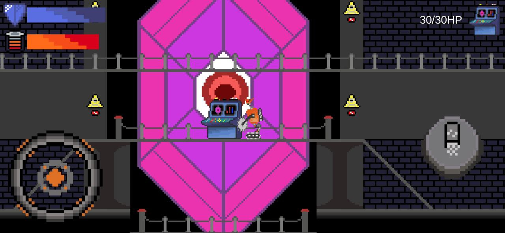

↑ ↑ ↑ тут можна завантажити повний вихідний код проєкту
Цей проєкт починався як простий Telegram-бот для популярної карткової гри "Блекджек" та для ознайомлення з роботою Telegram API,
а також із базою даних MySQL і асинхронною роботою. Бот був написаний на C# із використанням офіційної бібліотеки Telegram.Bot.
Згодом виникла можливість доопрацювати його і перетворити на курсовий проєкт на 4 курсі.
Це став мій найбільший проєкт не тільки в плані написання коду та вивчення нових технологій
(MySQL, різні HTTP-бібліотеки, робота з асинхронністю), але й у плані збору та аналізу матеріалів по тематиці проєкту — казино,
їхні уловки, різновиди ігор, правила та багато іншого, що стосується індустрії азартних ігор.
Було реалізовано:
Вступний запит на прийняття політики обробки інформації
Три розділи з розподіленою інформацією:
Про казино
Про різновиди ігор у казино
Про фішки та методи, які використовують казино для утримання гравців
Інтуїтивно зрозумілий інтерфейс за допомогою вбудованих Telegram-кнопок
Коротка реєстрація профілю зі створенням унікального нікнейму за заданими параметрами
Інформаційно оформлений профіль користувача
4 робочих гри (максимально наближені до реальності в рамках Telegram)
Демо-рахунок у вигляді фішок різного номіналу: 1, 5, 25, 50, 100, 500, 1000
Можливість комбінувати фішки різного номіналу для створення будь-якої ставки(у деяких іграх!)
Ця гра створювалася на 4 курсі під час зимових канікул для ознайомлення та саморозвитку
у створенні ігор, а також для практики роботи з Unity. Паралельно також ознайомлювався з основами малювання піксель-артів та загальними принципами створення 2D-графіки.
Історія полягає в тому, що вчені, знайшовши кристал із дивною живою активністю,
почали ставити на ньому досліди та проводити різні лабораторні експерименти.
Але з кожним днем кристал ставав дедалі активнішим і непередбачуванішим.
Тому за наказом правління вчені були змушені припинити досліди й знищити кристал.
Однак усе виявилося не так просто: кристал, відчувши для себе небезпеку,
почав захищати головний комп'ютер, тягнучи енергію з чотирьох енергоблоків,
розташованих неподалік. Через халатність проєктувальників не було передбачено
аварійного відключення цих блоків. Щоб назавжди покінчити з кристалом, потрібно було
спершу вимкнути всі енергоблоки в консолі головного комп'ютера, а потім знищити сам комп'ютер.
Після втрати життєвих сил кристал остаточно перетворився б на копалину.
Вам, як старому роботу давньої моделі, доведеться вистояти та захистити
головний комп'ютер від трьох хвиль слаймів, які атакують з різних сторін.
Лише вистоявши ці атаки, ви зможете дочекатися повного відключення живлення
для кристала й завершити свою місію.
Для створення спрайту кристалу та деяких інших елементів оформлення й тематики
я надихнувся грою Starbound та босом Erchius Horror.
Було реалізовано:
Головний екран та екран проіграшу
Переміщення за допомогою екранного джойстика
Постріли лазерами з очей робота
Можливість польоту
Ворог-слизень, який стрибає та стріляє/плюється хвилями слизу
Спливаючий текст, який веде гравця по грі

Використані технології та ресурси:
Unity
Елементи фізики в Unity
Прості анімації
C#
Aseprite
ChatGPT
YouTube
Документація Unity
Браузерні ресурси
Програма для автоматичної побудови зведених таблиць
↑ ↑ ↑ тут у репозиторії на GitHub доступні як повний вихідний код проєкту, так і готовий виконуваний файл (.exe).
Програма написана на C# з використанням Windows Forms.
Для роботи з Excel застосовані NuGet-пакети, зокрема для взаємодії з Excel API.
Розробка програми відбувалась як індивідуальне завдання під час виробничої практики у комунальному некомерційному підприємстві первинної медико-санітарної допомоги Дунаєвецької міської ради.
Метою було показати можливості автоматизації та прискорення обробки даних і побудови зведених таблиць.
Проект є пробним зразком, створеним із використанням безкоштовного функціоналу пакету Aspose.Cells.
Через авторські права цей варіант демонструє лише деякі можливості —
для повноцінної роботи потрібно придбати повний пакет Aspose.Cells та внести відповідні зміни у код.
У демо-версії на створених Excel-файлах завжди додається сторінка із підписом бібліотеки.
Було реалізовано:
Вибір Excel-файлу для обробки
Відкриття файлу та налаштування шаблонів збереження у форматі JSON
Вибір необмеженої кількості шаблонів для побудови у вибраному файлі
Видалення непотрібних шаблонів
Створення окремих шаблонів (хоча програма створювалася не як редактор шаблонів)
Обробка частих помилок, таких як:
файл зайнятий іншим процесом
відсутність вибраного файлу
невідповідність вибраних шаблонів до структури вибраної таблиці
Побудований інтерфейс, схожий на зведені таблиці Excel з урахуванням особливостей бібліотеки Aspose.Cells для уникнення помилок під час роботи